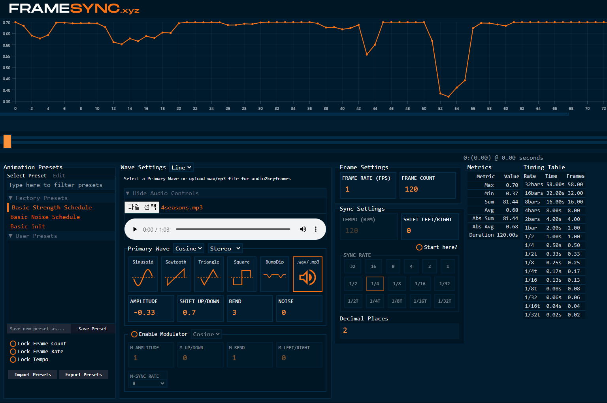
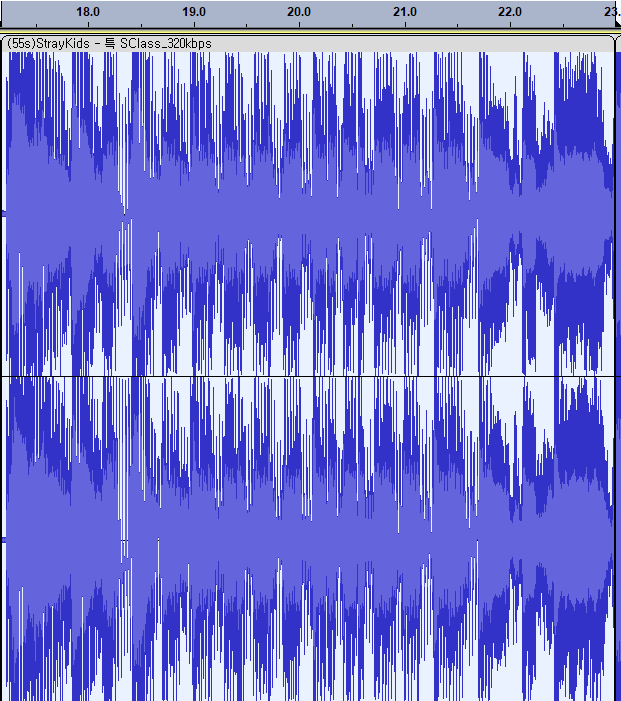
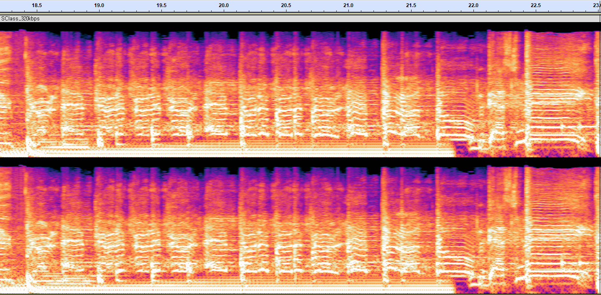

오디오 리액티브 영상 제작#
1. Keyframe 추출 사이트 사용#

음원을 업로드한다.
WebUI에서 세팅한 fps 값을 입력한다.
좌측의 Factory Presets에서 Basic Strength Schedule을 클릭 후 Primary Wave에서 .wav/.mp3를 클릭한다.
Primary Wave에서 파라미터를 조정한다.
AMPLITUDE : 절댓값이 클수록 keyframe의 최저값이 낮아짐 (최저점 =
SHIPT UP/DOWN+AMPLITUDE)Min, Max의 차이가 커질수록 audio에 민감하게 반응함
SHIFT UP/DOWN : Keyframe의 최고값
BEND : 값이 클수록 keyframe이 큰 쪽의 편차가 작아지고 작은 쪽의 피크만 남음
음악이 크게 치고 들어갈 때 이미지를 확 변하게 하고 싶다면 크게 설정하면 좋음
Cosine, Sigmoid 등 다른 wave 함수를 쓰는 것보다 .wav/.mp3 파일에서 직접 추출하는게 가장 audio reactive하게 나옴
출력된 string을 복사한다.

2. 수식 사용#
음악을 업로드한다.

WebUI에서 세팅한 fps 값을 입력한다.

음악의 진폭을 strength로 변환할 수식(Function)도 입력한다. Strength 값이 작을수록 새로운 이미지가 생성되므로, 진폭이 클 때 이미지 전환이 많이 되게 하고 싶다면 0~1의 범위에서 감소하는 함수를 입력해야 한다.
진폭이 높을 때 급격히 변하게 하고 싶으면 오목 함수(concave function) 사용
진폭이 낮을 때 급격히 변하게 하고 싶으면 볼록 함수(convex function) 사용
같은 비율로 하고 싶으면 선형 함수(linear function) 사용

Linear Function
${y=({b-a \over h})x+a}$
Convex Function
$y={b-a\over \ln(ch+1)}\ln(cx+1)+a$
Concave Function
$y=(a+c)x - c\exp({\ln ({k_1-b \over c}) \over h} x)$
예시

a=1, b=0.5, h=1
출력된 string을 복사한다.

(번외) Motion에 적용#
Keyframe 추출 사이트 사용#
Strength 방식과 동일하게 keyframe 추출 사이트를 사용하되, Primary Wave의 파라미터를 Motion Parameter의 범위에 맞게 설정한다.
예시 (3D Motion)
AMPLITUDE : -10 ~ 10 범위 내에서 Min, Max 값을 조절한다. (Translation 기준)
Min, Max의 차이가 커질수록 motion이 변하는 정도가 커져서 정신없어질 수 있음
-3 ~ 3 정도 범위 이내가 적당한 것 같음 (Translation 기준)
Rotation 기준 : -3 ~ 3 정도 범위 내에서 Min, Max 값을 조절해야함
-1.75 ~ 1.75 정도 범위 이내가 적당한 것 같음 (Rotation 기준)
(참고) 3D Motion
Translation X : left / right
Translation Y : up / down
Translation Z : zoom in / zoom out
Rotation X : rotate upward / rotate downward
Rotation Y : rotate up / rotate dowm
Rotation Z : rotate clockwise / rotate counterclockwise
3D Translation Z에 적용

수식 사용#
Motion에 cos, sin, exp 등의 함수를 사용하되, 함수에 사용되는 파라미터를 음악으로부터 찾는다.
예시 (음악에 맞는 cosine 함수의 주기 찾는 법)
Audacity에서 음원 자르기 뿐만 아니라 스펙트럼을 통해 원하는 구간을 맞춰 바꿔 놓을 수 있다. 하나는 특정 움직임을 주고 싶은 음원이고, 다른 하나는 해당 음원을 스펙트럼으로 표현한 것이다.

음원

스펙트럼
해당 구간에 거의 일정한 주기로 반복되는 것을 볼 수 있는데, 해당 구간을 집어보면 약 0.26초가 나온다.

따라서 $\mathrm{cos}(2\pi\mathrm{t}/0.26)$를 Rotation_X나 Rotation_Y 에 집어넣으면 된다.
그런데, 진폭을 1이상 올리면 아래와 같이 Line이나 frame이 발생하는 현상이 있어서 진폭을 0.5 이하로 줄이되, 주기를 다소 늘리는 편을 추천한다.
$$\mathrm{cos}(2\pi\mathrm{t}/0.26)$$

$$\mathrm{cos}(2\pi\mathrm{t}/0.52)$$

Final Movements $$0.4\times\mathrm{cos}(2\pi\mathrm{t}/11)$$

예시 (rotation 조정)
rotation_x는 위/아래로 회전하는 효과를 주고, rotation_y는 좌/우를 회전하는 효과를 준다. 이 때, 밑바닥에서 올라가듯이 날아다니는 느낌을 주고 싶다면 rotation_x와 rotation_y를 동시에 sin 함수를 사용하여 주기를 300 이상을 넣어보자.
rotation_x: {math}`0.5\times\mathrm{sin}(2\pi\mathrm{t}/300)`, rotation_y: {math}`0.3\times\mathrm{sin}(2\pi\mathrm{t}/500)`